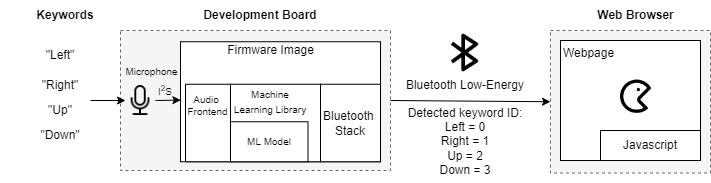

Keyword Spotting - Pac-Man¶
This tutorial describes how to use the MLTK to develop a “Pac-Man” keyword spotting demo.
The basic setup for this demo is as follows:

In the demo, embedded machine learning is used to detect the keywords:
Left
Right
Up
Down
Stop
Go
When a keyword is detected, its corresponding ID is sent to a webpage via Bluetooth Low-Energy. The webpage uses Javascript to process keyword ID to move the Pac-Man accordingly.
Live Demo¶
A live demo for this tutorial is available online:
https://mltk-pacman.web.app
NOTE: To use this demo, you must have a BRD2601 development board.
Quick Links¶
GitHub Source - View this tutorial on Github
Run on Colab - Run this tutorial on Google Colab
Train in the “Cloud” - Vastly improve training times by training this model in the “cloud”
C++ Example Application - View this tutorial’s associated C++ example application
Pac-Man Webpage Source - View the Pac-Man webpage’s source code on Github
Machine Learning Model - View this tutorial’s associated machine learning model
Live Demo - Play Pac-Man using the keywords: Left, Right, Up, Down
Presentation PDF - Presentation describing how this demo was created
Presentation Video - YouTube video of the presentation given to TinyML.org for this tutorial
Overview¶
Objectives¶
After completing this tutorial, you will have:
A better understanding of how audio classification machine learning models work
All of the tools needed to develop your own keyword spotting model
A better understanding of how to issue commands to a webpage from an embedded MCU via Bluetooth Low Energy
A working demo to play the game Pac-Man using the keywords: “Left”, “Right”, “Up”, “Down”, “Stop”, “Go”
Content¶
This tutorial is divided into the following sections:
Running this tutorial from a notebook¶
For documentation purposes, this tutorial was designed to run within a Jupyter Notebook. The notebook can either run locally on your PC or on a remote server like Google Colab.
Refer to the Notebook Examples Guide for more details
Click here:
 to run this tutorial interactively in your browser
to run this tutorial interactively in your browser
NOTE: Some of the following sections require this tutorial to be running locally with a supported embedded platform connected.
Running this tutorial from the command-line¶
While this tutorial uses a Jupyter Notebook, the recommended approach is to use your favorite text editor and standard command terminal, no Jupyter Notebook required.
See the Standard Python Package Installation guide for more details on how to enable the mltk command in your local terminal.
In this mode, when you encounter a !mltk command in this tutorial, the command should actually run in your local terminal (excluding the !)
Required Hardware¶
To play this tutorial’s game using machine learning + keyword spotting, the BRD2601 development board is required.
Install MLTK Python Package¶
Before using the MLTK, it must first be installed.
See the Installation Guide for more details.
!pip install --upgrade silabs-mltk
All MLTK modeling operations are accessible via the mltk command.
Run the command mltk --help to ensure it is working.
NOTE: The exclamation point ! tells the Notebook to run a shell command, it is not required in a standard terminal
!mltk --help
Usage: mltk [OPTIONS] COMMAND [ARGS]...
Silicon Labs Machine Learning Toolkit
This is a Python package with command-line utilities and scripts to aid the
development of machine learning models for Silicon Lab's embedded platforms.
Options:
--version Display the version of this mltk package and exit
--gpu / --no-gpu Disable usage of the GPU.
This does the same as defining the environment variable: CUDA_VISIBLE_DEVICES=-1
Example:
mltk --no-gpu train image_example1
--help Show this message and exit.
Commands:
build MLTK build commands
classify_audio Classify keywords/events detected in a microphone's...
classify_image Classify images detected by a camera connected to...
commander Silab's Commander Utility
compile Compile a model for the specified accelerator
custom Custom Model Operations
evaluate Evaluate a trained ML model
fingerprint_reader View/save fingerprints captured by the fingerprint...
profile Profile a model
quantize Quantize a model into a .tflite file
summarize Generate a summary of a model
train Train an ML model
update_params Update the parameters of a previously trained model
utest Run the all unit tests
view View an interactive graph of the given model in a...
view_audio View the spectrograms generated by the...
Prerequisite Reading¶
Before continuing with this tutorial, it is recommended to review the following documentation:
Keyword Spotting Overview - Provides overview of how embedded keyword spotting works
Keyword Spotting Tutorial - Provides an in-depth tutorial on how to create a keyword spotting model
Creating the Machine Learning Model¶
The pre-defined Model Specification used by the tutorial may be found on Github.
This model is a standard audio classification model designed to detect the classes:
Left
Right
Up
Down
Stop
Go
silence
Additionally, this model augments the training samples by adding audio recorded while playing the Pac-Man game. In this way, the model can be more robust to the background noise generated while playing the game.
Refer to the comments in the keyword_spotting_pacman.py for more details.
NOTE: A new, more robust model is available: keyword_spotting_pacman_v2
Model Parameter Tradeoffs¶
We have two main requirements when choosing the model parameters:
We want the spectrogram resolution and convolutional filters to be as high as possible so that the model can make accurate predictions
We want the model’s computational complexity to be as small as possible so that inference latency is small and keywords are quickly detected while playing the game
Note that the larger the spectrogram resolution, the larger the model’s input size and thus the larger the model’s computational complexity. Likewise, more convolution filters also increases the model’s computational complexity. As such, we need to find a middle ground for these parameters.
The MLTK offers two tools that can help when choosing these parameters:
Model Profiler - This allows for profiling the model on the embedded device and determining the inference latency before fully training the model
Audio Visualizer Utility - This allows for visualizing the generated spectrograms in real-time
Audio Feature Generator Settings¶
This model uses the following Audio Feature Generator settings:
from mltk.core.preprocess.audio.audio_feature_generator import AudioFeatureGeneratorSettings
frontend_settings = AudioFeatureGeneratorSettings()
# The sample rate, sample length, window size and window step
# control the width of the generated spectrogram
frontend_settings.sample_rate_hz = 16000 # This can also be 16k for slightly better performance at the cost of more RAM
frontend_settings.sample_length_ms = 700 # 0.7s sample size
frontend_settings.window_size_ms = 20
frontend_settings.window_step_ms = 10
frontend_settings.filterbank_n_channels = 70 # The number of frequency bins. This controls the height of the spectrogram
frontend_settings.filterbank_upper_band_limit = frontend_settings.sample_rate_hz // 2 # 8kHz
frontend_settings.filterbank_lower_band_limit = 150 # The dev board mic seems to have a lot of noise at lower frequencies
frontend_settings.noise_reduction_enable = False # Disable the noise reduction block
frontend_settings.pcan_enable = False # Disable the PCAN block
frontend_settings.dc_notch_filter_enable = True # Enable the DC notch filter
frontend_settings.dc_notch_filter_coefficient = 0.95
frontend_settings.quantize_dynamic_scale_enable = True # Enable dynamic quantization
frontend_settings.quantize_dynamic_scale_range_db = 40.0
This uses a 16kHz sample rate which was found to give better performance at the expense of more RAM.
frontend_settings.sample_rate_hz = 16000
To help reduce the model computational complexity, only a 700ms sample length is used (typically the length is 1s).
frontend_settings.sample_length_ms = 700
The idea here is that it only takes ~700ms to say any of the keywords (i.e. the audio buffer needs to be large enough to hold the entire keyword but no larger).
This model uses a window size of 20ms and a step of 10ms.
frontend_settings.window_size_ms = 20
frontend_settings.window_step_ms = 10
These values were found experimentally using the Audio Visualizer Utility.
70 frequency bins are used to generate the spectrogram:
frontend_settings.filterbank_n_channels = 70
Increasing this value improves the resolution of spectrogram at the cost of model computational complexity (i.e. inference latency).
The noise reduction and PCAN blocks were disabled to help reduce spectrogram generation latency:
frontend_settings.noise_reduction_enable = False
frontend_settings.pcan_enable = False
The DC notch filter was enabled to help remove the DC component from the development board’s microphone:
frontend_settings.dc_notch_filter_enable = True # Enable the DC notch filter
frontend_settings.dc_notch_filter_coefficient = 0.95
Dynamic quantization was enabled to convert the generated spectrogram from uint16 to int8
frontend_settings.quantize_dynamic_scale_enable = True # Enable dynamic quantization
frontend_settings.quantize_dynamic_scale_range_db = 40.0
Module Architecture¶
A generic Convolutional Neural Network (CNN) is used as the model architecture:
def my_model_builder(model: MyModel):
weight_decay = 1e-4
regularizer = regularizers.l2(weight_decay)
input_shape = model.input_shape
filters = 7
keras_model = Sequential(name=model.name, layers = [
Conv2D(filters, (3,3), padding='same', input_shape=input_shape),
BatchNormalization(),
Activation('relu'),
MaxPooling2D(2,2),
Conv2D(2*filters,(3,3), padding='same'),
BatchNormalization(),
Activation('relu'),
MaxPooling2D(2,2),
Conv2D(4*filters, (3,3), padding='same'),
BatchNormalization(),
Activation('relu'),
MaxPooling2D(2,2),
Conv2D(4*filters, (3,3), padding='same'),
BatchNormalization(),
Activation('relu'),
MaxPooling2D(2,2),
Conv2D(4*filters, (3,3), padding='same'),
BatchNormalization(),
Activation('relu'),
MaxPooling2D(2,2),
#Dropout(0.5),
Flatten(),
Dense(model.n_classes, activation='softmax')
])
keras_model.compile(
loss=model.loss,
optimizer=model.optimizer,
metrics=model.metrics
)
return keras_model
my_model.build_model_function = my_model_builder
The main parameter to modify is:
filters = 7
which controls the number of filters to use in each Conv2D layer. The larger this value is, the more trainable parameters the model will have which should allow for it to have better accuracy. However, increasing this value also increases the model’s computational complexity which increases the model inference latency.
Audio Data Generator¶
This model has an additional requirement that the keywords need to be said while the Pac-Man video game noises are generated in the background. As such, the model is trained by taking each keyword sample and adding a snippet of background noise to the sample. In this way, the model learns to pick out the keywords from the Pac-Man video game’s noises.
The Pac-Man game audio was acquired by recording during game play (using the arrows on the keyboard). Recording was done using the MLTK command:
mltk classify_audio keyword_spotting_pacman --dump-audio --device
This command uses the microphone on the development board to record the video game’s generated audio. The recorded audio is saved to the local PC as a .wav file.
After recording, a custom callback was added to the model specification file:
def get_batches_samples(
batch_index:int,
filenames:List[str],
classes:List[int],
params:ParallelProcessParams
) -> Tuple[int, Tuple[np.ndarray, np.ndarray]]:
"""This slightly modified from the standard function that comes with the MLTK:
https://github.com/siliconlabs/mltk/blob/master/mltk/core/preprocess/audio/parallel_generator/iterator.py#L241
80% of the time it adds a snippet of the Pac-Man background noise to the sample.
"""
if 'game' not in params.audio_data_generator.bg_noises:
PACMAN_BACKGROUND_NOISE, orignal_sr = librosa.load(PACMAN_BACKGROUND_NOISE_PATH, sr=frontend_settings.sample_rate_hz, mono=True, dtype='float32')
params.audio_data_generator.bg_noises['game'] = PACMAN_BACKGROUND_NOISE
batch_shape = (len(filenames),) + params.sample_shape
batch_x = np.zeros(batch_shape, dtype=params.dtype)
for i, (filename, class_id) in enumerate(zip(filenames, classes)):
if filename:
filepath = os.path.join(params.directory, filename)
x, orignal_sr = librosa.load(filepath, sr=None, mono=True, dtype='float32')
else:
orignal_sr = 16000
x = np.zeros((orignal_sr,), dtype='float32')
transform_params = params.audio_data_generator.get_random_transform()
add_game_background_noise = random.uniform(0, 1) < .8 # Add the game background noise 80% of the time
if add_game_background_noise:
transform_params['noise_color'] = None
transform_params['bg_noise'] = 'game'
# Apply any audio augmentations
# NOTE: If transform_params = default_transform
# Then the audio sample is simply cropped/padded to fit the expected sample length
x = params.audio_data_generator.apply_transform(x, orignal_sr, transform_params)
# After point through the frontend,
# x = [height, width] dtype=self.dtype
x = params.audio_data_generator.apply_frontend(x, dtype=params.dtype)
# Convert the sample's shape from [height, width]
# to [height, width, 1]
batch_x[i] = np.expand_dims(x, axis=-1)
batch_y = np.zeros((len(batch_x), len(params.class_indices)), dtype=params.dtype)
for i, class_id in enumerate(classes):
batch_y[i, class_id] = 1.
return batch_index, (batch_x, batch_y)
Which takes random snippets of the recorded audio and applies it to 80% of the training samples.
Profiling the model¶
Before training a machine learning model, it is important to know how efficiently the model will execute on the embedded target. This is especially true when using keyword spotting to control a Pac-Man (a keyword that takes > 1s to detect will not be useful when trying to avoid the ghosts).
If the model inference takes too long to execute on the embedded target, then the model parameters need to be decreased to reduce the model’s computational complexity. The desired model parameters should be known before the model is fully trained.
To help determine the best model parameters, the MLTK features a Model Profiler command:
!mltk profile keyword_spotting_pacman --device --build --accelerator MVP
WARNING:absl:Found untraced functions such as _jit_compiled_convolution_op, _jit_compiled_convolution_op, _jit_compiled_convolution_op, _jit_compiled_convolution_op, _jit_compiled_convolution_op while saving (showing 5 of 5). These functions will not be directly callable after loading.
C:\Users\reed\workspace\silabs\mltk\.venv\lib\site-packages\tensorflow\lite\python\convert.py:766: UserWarning: Statistics for quantized inputs were expected, but not specified; continuing anyway.
warnings.warn("Statistics for quantized inputs were expected, but not "
Programming ML model to device ...
Profiling ML model on device ...
Profiling Summary
Name: keyword_spotting_pacman
Accelerator: MVP
Input Shape: 1x69x70x1
Input Data Type: int8
Output Shape: 1x7
Output Data Type: int8
Flash, Model File Size (bytes): 32.8k
RAM, Runtime Memory Size (bytes): 51.8k
Operation Count: 6.1M
Multiply-Accumulate Count: 2.9M
Layer Count: 13
Unsupported Layer Count: 0
Accelerator Cycle Count: 3.0M
CPU Cycle Count: 265.0k
CPU Utilization (%): 8.6
Clock Rate (hz): 78.0M
Time (s): 39.3m
Ops/s: 155.4M
MACs/s: 74.3M
Inference/s: 25.4
Model Layers
+-------+-----------------+--------+--------+------------+------------+----------+-------------------------+--------------+-----------------------------------------------------+
| Index | OpCode | # Ops | # MACs | Acc Cycles | CPU Cycles | Time (s) | Input Shape | Output Shape | Options |
+-------+-----------------+--------+--------+------------+------------+----------+-------------------------+--------------+-----------------------------------------------------+
| 0 | conv_2d | 710.0k | 304.3k | 482.4k | 30.6k | 6.3m | 1x69x70x1,7x3x3x1,7 | 1x69x70x7 | Padding:same stride:1x1 activation:relu |
| 1 | max_pool_2d | 33.3k | 0 | 50.1k | 14.0k | 720.0u | 1x69x70x7 | 1x34x35x7 | Padding:valid stride:2x2 filter:2x2 activation:none |
| 2 | conv_2d | 2.1M | 1.0M | 1.3M | 29.6k | 16.8m | 1x34x35x7,14x3x3x7,14 | 1x34x35x14 | Padding:same stride:1x1 activation:relu |
| 3 | max_pool_2d | 16.2k | 0 | 12.2k | 13.9k | 240.0u | 1x34x35x14 | 1x17x17x14 | Padding:valid stride:2x2 filter:2x2 activation:none |
| 4 | conv_2d | 2.1M | 1.0M | 738.3k | 30.2k | 9.4m | 1x17x17x14,28x3x3x14,28 | 1x17x17x28 | Padding:same stride:1x1 activation:relu |
| 5 | max_pool_2d | 7.2k | 0 | 5.6k | 26.4k | 330.0u | 1x17x17x28 | 1x8x8x28 | Padding:valid stride:2x2 filter:2x2 activation:none |
| 6 | conv_2d | 908.5k | 451.6k | 293.2k | 30.3k | 3.8m | 1x8x8x28,28x3x3x28,28 | 1x8x8x28 | Padding:same stride:1x1 activation:relu |
| 7 | max_pool_2d | 1.8k | 0 | 1.5k | 26.3k | 330.0u | 1x8x8x28 | 1x4x4x28 | Padding:valid stride:2x2 filter:2x2 activation:none |
| 8 | conv_2d | 227.1k | 112.9k | 62.1k | 27.9k | 900.0u | 1x4x4x28,28x3x3x28,28 | 1x4x4x28 | Padding:same stride:1x1 activation:relu |
| 9 | max_pool_2d | 448.0 | 0 | 532.0 | 26.3k | 330.0u | 1x4x4x28 | 1x2x2x28 | Padding:valid stride:2x2 filter:2x2 activation:none |
| 10 | reshape | 0 | 0 | 0 | 1.0k | 0 | 1x2x2x28,2 | 1x112 | Type=none |
| 11 | fully_connected | 1.6k | 784.0 | 1.2k | 2.2k | 60.0u | 1x112,7x112,7 | 1x7 | Activation:none |
| 12 | softmax | 35.0 | 0 | 0 | 6.1k | 60.0u | 1x7 | 1x7 | Type=softmaxoptions |
+-------+-----------------+--------+--------+------------+------------+----------+-------------------------+--------------+-----------------------------------------------------+
Generating profiling report at C:/Users/reed/.mltk/models/keyword_spotting_pacman-test/profiling
Profiling time: 55.241210 seconds
This command builds the model then profiles it on the development board using the MVP hardware accelerator.
Training the model¶
Once the model specification is ready, it can be trained with the command:
!mltk train keyword_spotting_pacman
Train in cloud¶
Alternatively, you can vastly improve the model training time by training this model in the “cloud”.
See the tutorial: Cloud Training with vast.ai for more details.
After training completes, a model archive file is generated containing the quantized .tflite model file. This is the file that is built into the firmware application.
Creating the Firmware Application¶
The BLE Audio Classifier C++ example application may be used with the train model.
The application uses the Audio Feature Generator library to generate spectrograms from the streaming microphone audio. The spectrograms are then passed to the Tensorflow-Lite Micro inference engine which uses the trained model from above to make predictions on if a keyword is found in the spectrogram. If a keyword is detected, a connected BLE client is sent a notification containing the detected class ID of the keyword and prediction probability.
Creating the Pac-Man Webpage¶
A Pac-Man Webpage is available that allows for playing the game “Pac-Man” using the keywords detected by the firmware application described above.
This webpage was adapted from a game created by Lucio Panpinto, view original source code on GitHub.
The webpage was modified to use the p5.ble.js library for communicating with the firmware application via Bluetooth Low Energy.
Running the Demo¶
With the following components complete:
Keyword spotting machine learning model
Firmware application with Audio Feature Generator, Tensorflow-Lite Micro, and Bluetooth libraries
Pac-Man webpage with Bluetooth
We can now run the demo.
A live demo may be found at: https://mltk-pacman.web.app.
Alternatively, you can build the firmware application from source and run the webpage locally:
Build firmware application from source¶
The MLTK supports building C++ Applications.
It also features a ble_audio_classifier C++ application which can be built using:
Refer to the ble_audio_classifier application’s documentation for how include your model into the built application.
Run webpage locally¶
The demo’s webpage uses “vanilla” javascript+css+html. No special build systems are required.
To run the webpage locally, simply open index.html in your web browser (NOTE: double-click the locally cloned index.html on your PC, not the one on Github).
When the webpage starts, follow the instructions but do not program the .s37. The locally built firmware application should have already been programmed as described in the the previous section.